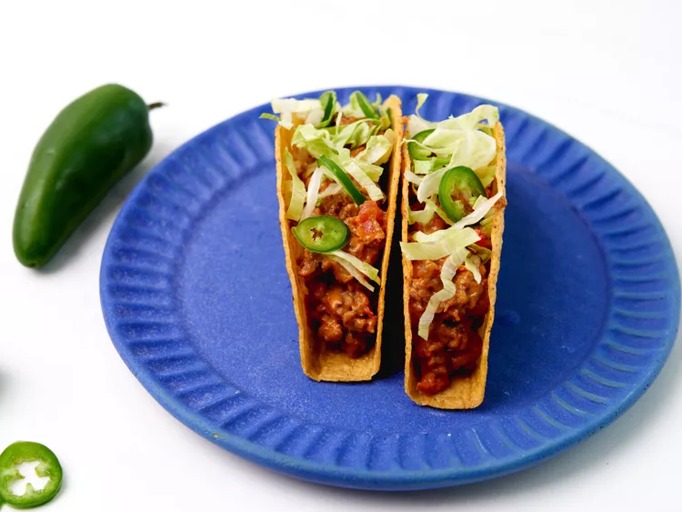

Beef Tacos
Click to see all recipes

Credit: allrecipes.com / Dotdash Meredith Food Studios
Description
Enjoy Tacos served with cheese - but not too many.
Ingridients List
- 250 grams lean ground beef
- 1 medium sized onion
- 200 grams cheddar cheese
- 1 can of diced tomatoes
- 1 tablespoon olive oil
- 1 taco seasoning: Chilli powder, paprika, oregano, chilli flakes, salt, black pepper
- 8 taco shells
- Lettuce & any other toppings of choice
Steps
- Add diced onion to a large skillet at medium-to-high heat.
- Add ground beef to skillet, crumbling with wooden spoon, until brown / cooked through. Cook for 8-10 minutes.
- Add seasoning and cook for 1 minute.
- Add cheese and tomatoes amd stir over a medium heat.
- Cook stiring constatly, until cheese is melted and mixture comes to a simmer.
- Cook for 3 more minutes and remove from heat.
- Add filling to taco shells and top with shredded lettuce and any other toppings of choice.
- Serve and enjoy!